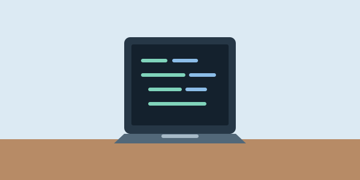

Pierwsza strona internetowa — od czego zacząć?
Do stworzenia pierwszej strony internetowej wystarczą edytor kodu i przeglądarka. Na początek warto przygotować prostą stronę o sobie: dodać nagłówek, kilka zdań o zainteresowaniach i listę projektów ze studiów. Plik zapisany jako index.html można otworzyć bezpośrednio w przeglądarce i od razu zobaczyć efekt swojej pracy.
HTML określa strukturę i znaczenie treści strony. Za pomocą jego znaczników tworzymy między innymi nagłówki, akapity, linki i obrazy. CSS odpowiada za wygląd: kolory, wielkość tekstu, odstępy i układ elementów. Dobrym ćwiczeniem jest zapisanie stylów w osobnym pliku style.css i podłączenie go do dokumentu HTML. Dzięki temu ten sam wygląd można łatwo zastosować na kilku podstronach.
Najłatwiej uczyć się małymi krokami: zmienić jedną rzecz w kodzie, zapisać plik i odświeżyć stronę. Jeśli coś nie działa, warto sprawdzić ścieżki do plików i domknięcie znaczników, a potem zajrzeć do narzędzi deweloperskich przeglądarki, zwykle dostępnych pod klawiszem F12. Na koniec dobrze jest zwęzić okno i upewnić się, że tekst oraz kafelki nadal są czytelne. Taka prosta strona może później stać się podstawą własnego portfolio.
